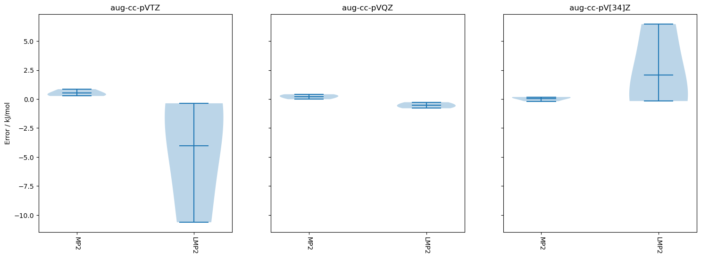

Non-covalent interactions benchmark
[1]:
import pymolpro
import pandas as pd
[2]:
backend = 'local' # If preferred, change this to one of the backends in your ~/.sjef/molpro/backends.xml that is ssh-accessible
project_name = 'Non-covalent interactions benchmark'
parallel = None # how many jobs to run at once
[3]:
methods = {"HF": "df-hf", "MP2": "df-mp2", "LMP2": "df-lmp2", }
bases = ['aug-cc-pVDZ', 'aug-cc-pVTZ', 'aug-cc-pVQZ']
[4]:
db = pymolpro.database.load("GMTKN55_S22").subset('small')
[5]:
results = {}
for method in methods:
results[method] = {}
for basis in bases:
results[method][basis] = pymolpro.database.run(db, methods[method], basis, location=project_name,
backend=backend, parallel=parallel)
[6]:
for method in methods:
for result in pymolpro.database.basis_extrapolate(results[method].values(),results['HF'].values()):
results[method][result.basis]=result
for basis in results[method]:
if basis not in bases: bases.append(basis)
[50]:
pd.set_option('display.precision', 2)
method_errors = pymolpro.database.analyse([results[method]['aug-cc-pVQZ'] for method in methods], db, 'kJ/mol')[
'reaction statistics']
with open(project_name + '.method_errors.tex', 'w') as tf:
tf.write('\\ifx\\toprule\\undefined\\def\\toprule{\\hline\\hline}\n\\def\\midrule{\\hline}\n\\def\\bottomrule{\\hline\\hline}\\fi') # or \usepackage{booktabs}
tf.write(method_errors.style.format(precision=2).to_latex(hrules=True,multicol_align='c',caption='Method errors'))
method_errors
[50]:
| DF-HF | DF-MP2 | DF-LMP2 | |
|---|---|---|---|
| aug-cc-pVQZ | aug-cc-pVQZ | aug-cc-pVQZ | |
| MSD | -6.08 | 0.22 | -0.54 |
| STDEVD | 2.03 | 0.21 | 0.26 |
| MAD | 6.08 | 0.22 | 0.54 |
| MAXD | 7.52 | 0.42 | 0.79 |
| RMSD | 6.30 | 0.28 | 0.58 |
[15]:
for key, table in pymolpro.database.analyse([results[method]['aug-cc-pVQZ'] for method in methods], db).items():
print(key)
print(table)
reaction energies
DF-HF DF-MP2 DF-LMP2
aug-cc-pVQZ aug-cc-pVQZ aug-cc-pVQZ
2 5.30e-03 8.11e-03 7.65e-03
1 2.13e-03 5.09e-03 4.78e-03
8 -5.94e-04 8.36e-04 7.38e-04
reaction energy deviations
DF-HF DF-MP2 DF-LMP2
aug-cc-pVQZ aug-cc-pVQZ aug-cc-pVQZ
2 -2.65e-03 1.59e-04 -3.02e-04
1 -2.87e-03 9.25e-05 -2.12e-04
8 -1.43e-03 -3.85e-06 -1.02e-04
reaction statistics
DF-HF DF-MP2 DF-LMP2
aug-cc-pVQZ aug-cc-pVQZ aug-cc-pVQZ
MSD -2.32e-03 8.25e-05 -2.05e-04
STDEVD 7.72e-04 8.18e-05 9.99e-05
MAD 2.32e-03 8.51e-05 2.05e-04
MAXD 2.87e-03 1.59e-04 3.02e-04
RMSD 2.40e-03 1.06e-04 2.21e-04
molecule energies
DF-HF DF-MP2 DF-LMP2
aug-cc-pVQZ aug-cc-pVQZ aug-cc-pVQZ
02 -152.14 -152.71 -152.71
08 -80.43 -80.86 -80.85
01 -112.45 -112.96 -112.96
01a -56.22 -56.48 -56.48
02a -76.07 -76.35 -76.35
08a -40.22 -40.43 -40.43
[49]:
pd.set_option('display.precision', 2)
method_errors = pymolpro.database.analyse([results[method]['aug-cc-pVQZ'] for method in methods], db, 'kJ/mol')[
'reaction energy deviations']
method_errors
[49]:
| DF-HF | DF-MP2 | DF-LMP2 | |
|---|---|---|---|
| aug-cc-pVQZ | aug-cc-pVQZ | aug-cc-pVQZ | |
| 2 | -6.96 | 0.42 | -0.79 |
| 1 | -7.52 | 0.24 | -0.56 |
| 8 | -3.76 | -0.01 | -0.27 |
[48]:
pd.set_option('display.precision', 2)
basis_errors = pymolpro.database.analyse([results['LMP2'][basis] for basis in bases], db, 'kJ/mol')[
'reaction statistics']
with open(project_name + '.basis_errors.tex', 'w') as tf:
tf.write('\\ifx\\toprule\\undefined\\def\\toprule{\\hline\\hline}\n\\def\\midrule{\\hline}\n\\def\\bottomrule{\\hline\\hline}\\fi') # or \usepackage{booktabs}
tf.write(basis_errors.style.format(precision=2).to_latex(hrules=True,multicol_align='c',caption='Basis errors'))
basis_errors
[48]:
| DF-LMP2 | |||||
|---|---|---|---|---|---|
| aug-cc-pVDZ | aug-cc-pVTZ | aug-cc-pVQZ | aug-cc-pV[23]Z | aug-cc-pV[34]Z | |
| MSD | -1.21 | -4.05 | -0.54 | -4.85 | 2.07 |
| STDEVD | 1.36 | 5.71 | 0.26 | 7.71 | 3.80 |
| MAD | 1.44 | 4.05 | 0.54 | 4.85 | 2.24 |
| MAXD | 2.23 | 10.62 | 0.79 | 13.76 | 6.46 |
| RMSD | 1.64 | 6.17 | 0.58 | 7.95 | 3.73 |
[18]:
import matplotlib.pyplot as plt
methods_pruned = [method for method in methods if method != 'HF']
bases_pruned = ['aug-cc-pVTZ', 'aug-cc-pVQZ', 'aug-cc-pV[34]Z']
fig, panes = plt.subplots(nrows=1, ncols=len(bases_pruned), sharey=True, figsize=(18, 6))
for pane in range(len(bases_pruned)):
data = []
for method in methods_pruned:
data.append(
pymolpro.database.analyse(results[method][bases_pruned[pane]],
db,'kJ/mol')['reaction energy deviations'].to_numpy()[:, 0]
)
panes[pane].violinplot(data, showmeans=True, showextrema=True, vert=True, bw_method='silverman')
panes[pane].set_xticks(range(1, len(methods_pruned) + 1), labels=methods_pruned, rotation=-90)
panes[pane].set_title(bases_pruned[pane])
panes[0].set_ylabel('Error / kJ/mol')
plt.savefig(project_name + ".violin.pdf")

[36]:
basis_errors.to_latex(float_format='%.2f')
/var/folders/qd/f26v1rbd3g5341rsg3s9j4v80000gn/T/ipykernel_71408/3833976484.py:1: FutureWarning: In future versions `DataFrame.to_latex` is expected to utilise the base implementation of `Styler.to_latex` for formatting and rendering. The arguments signature may therefore change. It is recommended instead to use `DataFrame.style.to_latex` which also contains additional functionality.
basis_errors.to_latex(float_format='%.2f')
[36]:
'\\begin{tabular}{lrrrrr}\n\\toprule\n{} & \\multicolumn{5}{l}{DF-LMP2} \\\\\n{} & aug-cc-pVDZ & aug-cc-pVTZ & aug-cc-pVQZ & aug-cc-pV[23]Z & aug-cc-pV[34]Z \\\\\n\\midrule\nMSD & -1.21 & -4.05 & -0.54 & -4.85 & 2.07 \\\\\nSTDEVD & 1.36 & 5.71 & 0.26 & 7.71 & 3.80 \\\\\nMAD & 1.44 & 4.05 & 0.54 & 4.85 & 2.24 \\\\\nMAXD & 2.23 & 10.62 & 0.79 & 13.76 & 6.46 \\\\\nRMSD & 1.64 & 6.17 & 0.58 & 7.95 & 3.73 \\\\\n\\bottomrule\n\\end{tabular}\n'
[46]:
print(basis_errors.style.format(precision=3).to_latex(hrules=True,multicol_align='c'))
\begin{tabular}{lrrrrr}
\toprule
& \multicolumn{5}{c}{DF-LMP2} \\
& aug-cc-pVDZ & aug-cc-pVTZ & aug-cc-pVQZ & aug-cc-pV[23]Z & aug-cc-pV[34]Z \\
\midrule
MSD & -1.210 & -4.046 & -0.539 & -4.854 & 2.070 \\
STDEVD & 1.362 & 5.710 & 0.262 & 7.711 & 3.804 \\
MAD & 1.435 & 4.046 & 0.539 & 4.854 & 2.238 \\
MAXD & 2.226 & 10.624 & 0.792 & 13.757 & 6.462 \\
RMSD & 1.644 & 6.173 & 0.580 & 7.950 & 3.733 \\
\bottomrule
\end{tabular}
[ ]:
with open(project_name + '.tex', 'w') as tf:
tf.write('\\def\\toprule{\\hline\\hline}\n\\def\\midrule{\\hline}\n\\def\\bottomrule{\\hline\\hline}')
tf.write(df_exp_reaction_meanerror.style.to_latex())
tf.write(df_exp_reaction_std.style.to_latex())
tf.write(df_exp_reaction_meanabserror.style.to_latex())
tf.write(df_exp_reaction_maxerror.style.to_latex())
[ ]: